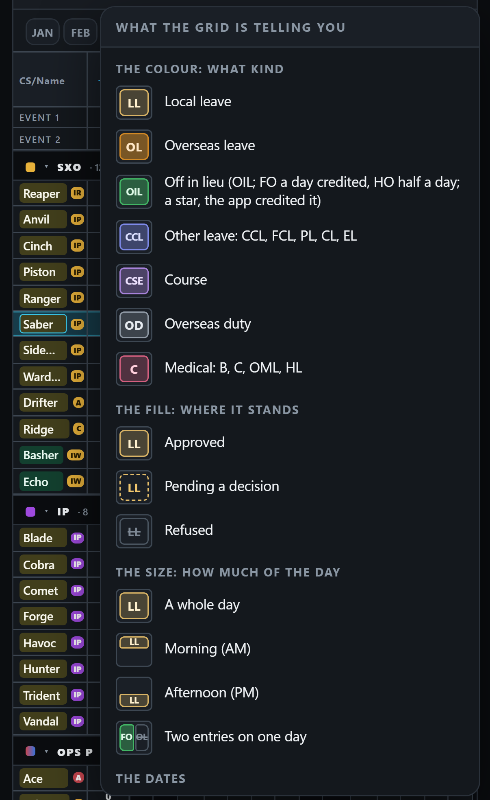
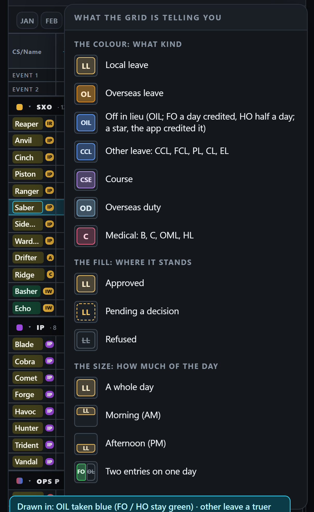
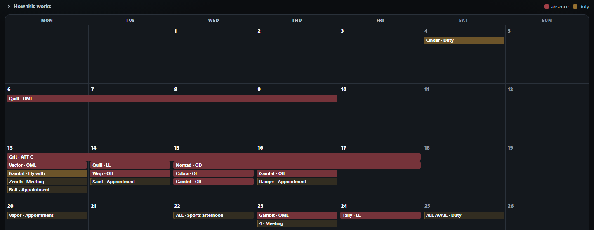
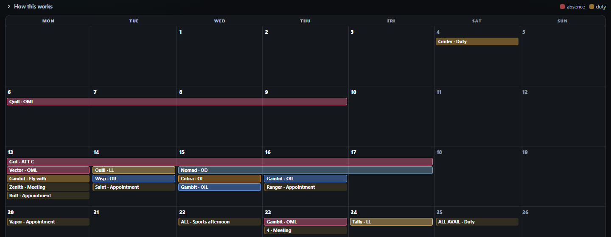

<title>Input colours, 24 Oct</title>
<meta name="claude:viewport-fit-sides" content="cover">
<style>
:root{--bg:#eef2f4;--panel:#fff;--ink:#14202a;--ink-2:#4a5a66;--edge:#d3dde3;--accent:#0b7f99;--f:system-ui,-apple-system,"Segoe UI",Roboto,sans-serif}
@media (prefers-color-scheme:dark){:root:not([data-theme="light"]){--bg:#0d141a;--panel:#141e26;--ink:#e4edf2;--ink-2:#9db0bc;--edge:#26343f;--accent:#38c6e4;color-scheme:dark}}
:root[data-theme="dark"]{--bg:#0d141a;--panel:#141e26;--ink:#e4edf2;--ink-2:#9db0bc;--edge:#26343f;--accent:#38c6e4;color-scheme:dark}
body{background:var(--bg);color:var(--ink);font:15px/1.55 var(--f);padding-left:max(16px,env(safe-area-inset-left,0px));padding-right:max(16px,env(safe-area-inset-right,0px));padding-block:20px 48px}
main{max-width:1000px;margin:0 auto;display:grid;gap:24px}h1{font-size:22px;margin:0}h2{font-size:17px;margin:0}
.pics{display:grid;grid-template-columns:repeat(auto-fit,minmax(280px,1fr));gap:12px}
figure{margin:0;background:var(--panel);border:1px solid var(--edge);border-radius:10px;overflow:hidden}
figure img{display:block;width:100%;height:auto}figcaption{padding:8px 10px;font-size:13px;color:var(--ink-2)}
ol{margin:0;padding-left:20px;display:grid;gap:6px}a{color:var(--accent)}
</style>
<main>
<h1>The input colours — today and a proposal</h1>
<ol>
<li><b>OIL taken → the other leave's blue; FO / HO keep the green</b> (green already means OIL earned in the app).</li>
<li><b>Other leave a truer blue</b>, further from the course's lilac — the two read alike in a small box.</li>
<li><b>Overseas duty slate and filled</b>, not grey — grey also means refused and past.</li>
<li><b>One colour per kind on both pages:</b> the Inputs calendar draws every absence in the app's error red and every duty in its warning amber; a leave there should look as it does on the Leave War. Duties then need a colour of their own, since amber is leave's.</li>
</ol>
<section><h2>The Leave War's Legend (phone)</h2><div class="pics">
<figure><a href="legend-today.png"></a><figcaption>Today</figcaption></figure>
<figure><a href="legend-proposed.png"></a><figcaption>Drawn in: 1, 2 and 3</figcaption></figure></div></section>
<section><h2>The Inputs calendar (desktop, July)</h2><div class="pics">
<figure><a href="inputs-cal-today.png"></a><figcaption>Today: absence red, duty amber</figcaption></figure>
<figure><a href="inputs-cal-proposed.png"></a><figcaption>Drawn in: each kind its Leave War colour — note LL now looks like a duty's amber</figcaption></figure></div></section>
</main>
